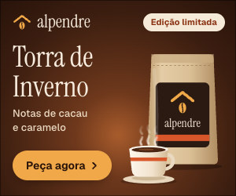
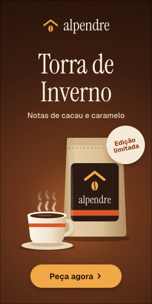
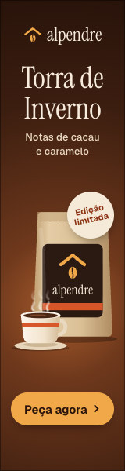
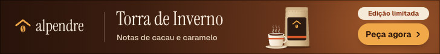
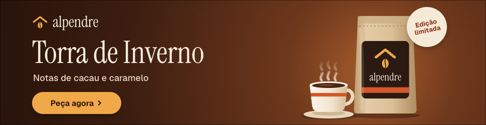

Cliente: Alpendre Cafés Especiais
Torra de Inverno
Todas as peças da campanha em uma página, cada uma no tamanho real e acompanhada da imagem de fallback. Cada peça começa a animar quando aparece na tela, e o botão Repetir mostra a animação de novo quando você quiser.
- Formatos
- 6
- Maior peça
- 14,0 KB
- Limite por peça
- 150 KB
- Duração
- 10 s
Linha criativa 1: Aroma que aquece
6 formatos IAB, HTML5 com clickTag
300 × 250Retângulo médio
13,5 KB de 150 KBDentro do limite

300 × 600Meia página
13,8 KB de 150 KBDentro do limite

160 × 600Arranha-céu largo
13,6 KB de 150 KBDentro do limite

728 × 90Super banner
13,6 KB de 150 KBDentro do limite

970 × 250Billboard
14,0 KB de 150 KBDentro do limite

320 × 50Banner mobile
12,9 KB de 150 KBDentro do limite
Exemplo de demonstração. A agência e a marca desta página são fictícias, criadas só para mostrar como fica a página de preview de uma campanha.